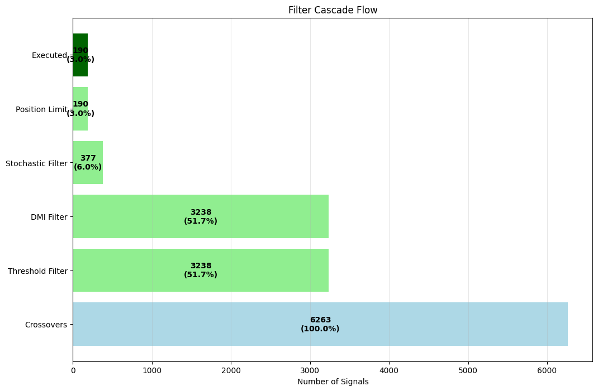
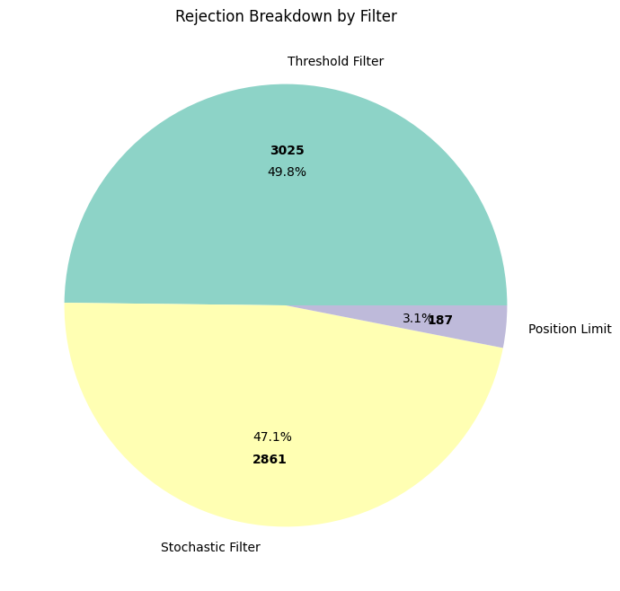
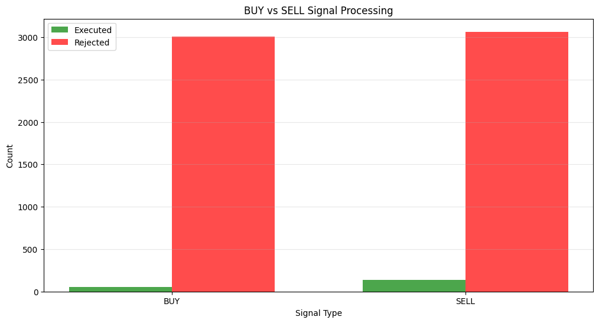
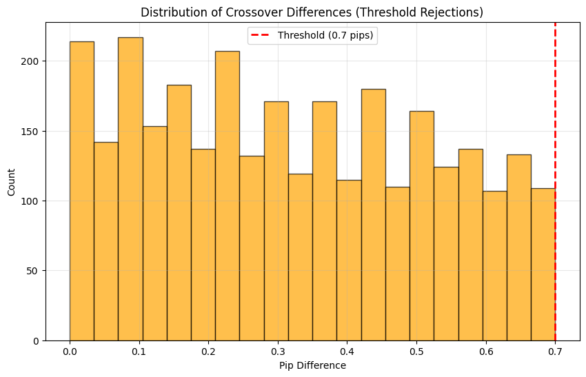

Filter Effectiveness Analysis
Backtest Run: EUR-USD_20251013_201415
Total Rejections
6073 (97.0%)
Filter Cascade Flow

Rejection Breakdown

Filter Statistics
| Filter |
Signals In |
Passed |
Rejected |
Pass Rate |
| Threshold Filter |
6263 |
3238 |
3025 |
51.7% |
| DMI Filter |
3238 |
3238 |
0 |
100.0% |
| Stochastic Filter |
3238 |
377 |
2861 |
11.6% |
| Position Limit |
377 |
190 |
187 |
50.4% |
Signal Type Comparison

Threshold Proximity Analysis

Recommendations
- Threshold filter is most active (48.3% rejection rate)
- Consider running comparative backtests to measure PnL contribution
- Analyze threshold proximity to optimize crossover threshold
- Monitor DMI and Stochastic filter effectiveness over time